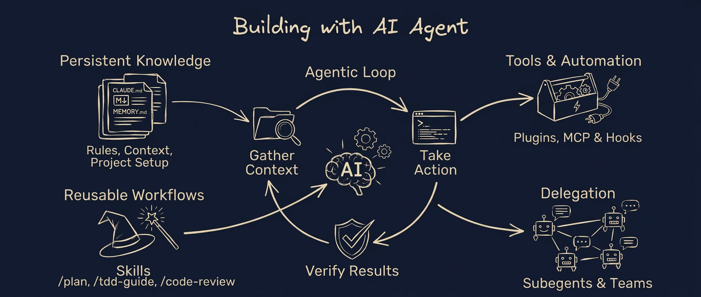
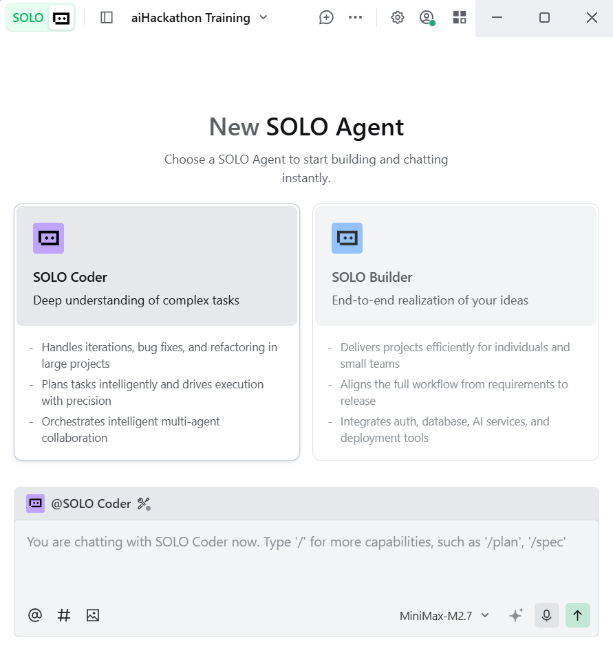
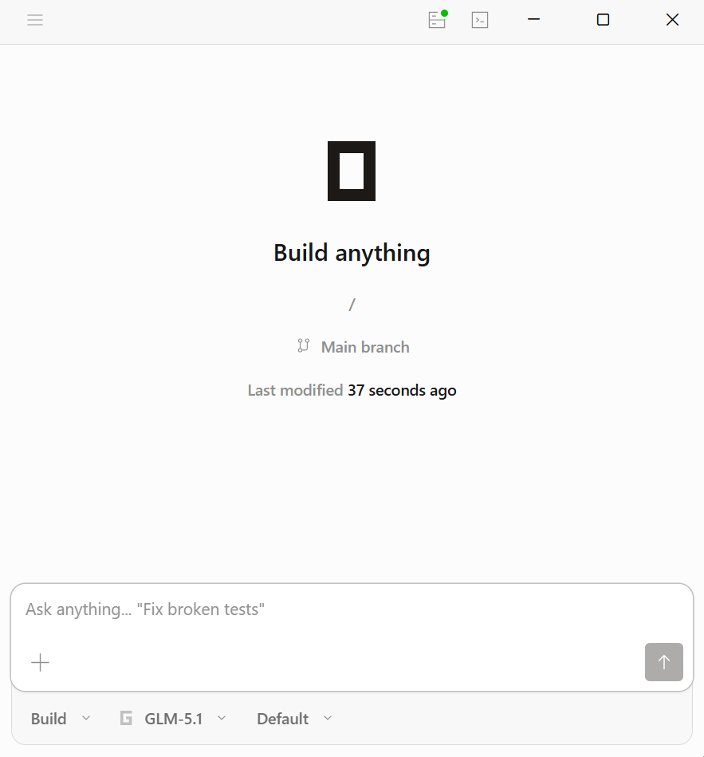

What Are AI Coding Agents?
AI coding agents are a specialised type of AI agent designed specifically for software development. Unlike general-purpose chatbots or content-generation agents, coding agents operate within a structured agentic loop that combines persistent project knowledge, tool access, and automated verification ??as illustrated in the diagram below.

How Coding Agents Differ from Other AI Agents
While many AI agents can generate text, answer questions, or create content, AI coding agents are distinguished by several key capabilities shown in the diagram above:
- Persistent Knowledge: Unlike chat-based AI that forgets context between sessions, coding agents maintain rules, context, and project setup through files like AGENTS.md and MEMORY.md. This means the agent understands your codebase conventions, architecture decisions, and project-specific patterns across every interaction.
- Agentic Loop: Coding agents don't just respond once ??they gather context from your codebase, take action by writing or modifying code, then verify results by running tests or checking for errors. This closed loop ensures the output actually works, not just looks plausible.
- Tools & Automation: Coding agents integrate with plugins, MCP servers, and hooks ??giving them access to databases, APIs, file systems, and development tools that general AI agents cannot reach. They can run terminal commands, query databases, and interact with your development environment directly.
- Delegation: Complex tasks can be split across subagents and teams. A coding agent can delegate specialised work ??such as writing tests, reviewing security, or generating documentation ??to purpose-built subagents, then synthesise the results.
- Reusable Workflows: Through skills like /plan, /tdd-guide, and /code-review, coding agents follow proven engineering patterns rather than improvising. This ensures consistent quality and adherence to best practices.
The diagram above shows that AI coding agents are not just "smarter chatbots" ??they are autonomous systems that understand your project, take concrete actions in your codebase, verify their own work, and can delegate to specialised subagents. This makes them fundamentally different from general-purpose AI assistants.
Why Does This Matter?
- Speed: What used to take hours can now take minutes
- Accessibility: You don't need to memorise every syntax rule or library function
- Focus: Spend more time on creative problem-solving and less on repetitive coding
- Learning: See how experienced developers would approach problems by studying the AI's suggestions
AI coding agents for aiHackathon

TRAE SOLO
- Subscription required
- Easy to use ??great balance of power and simplicity
- Safe sandbox ??tests your code in an isolated environment

OpenCode
- Free and open-source
- Best for those comfortable with coding and terminals
- Full control ??runs directly on your own computer